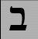
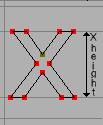

| A |
-
 送り幅 (advance width) 送り幅 (advance width)
-
グリフの開始位置から次のグリフの開始位置までの距離。グリフの幅と呼ばれることもある。縦書き用の送り幅も参照のこと。
-
Apple 高度組版機能 (AAT)
-
TrueType フォントの基本機能に対する Apple の拡張。文脈依存の置換、合字、カーニングなどを含む。可変フォントの仕様も含まれている。
-
アセンダ (ascender)
-
x-height の上から飛び出している小文字のステムのこと. 例えば“l”は ascender がある.
x-height, cap-height, Descender, オーバーシュート, ベースラインの項目も見よ.
x ハイト,
キャップハイト, ディセンダ,
オーバーシュート, ベースライン の各項目も参照のこと。
-
アンカークラス (anchor class)
-
OpenType の GPOS における mark-to-base や cursive subtable を指定するのに使われる.
overview を見よ.
-
アセント
-
昔からの typography ではフォントの高さとはベースラインからフォント全体で一番高いところまでの距離であった.
近頃の typography では定義によって少しづつ違うようだ.
-
ATSUI
-
Apple 社謹製の高度な typography 用のシステム。Apple Advanced Typography とも呼ばれる。
|
| B |
-
ベースライン (baseline)
-
(ラテン文字やギリシャ文字, そしてキリル文字において)そのちょうど上に文字が乗っかっているような仮想的な水平線のことをベースラインと言う. ベースラインは違う script では違った位置にある可能性がある. Indic script では多くの文字がベースラインの下にある. また(DTP 以前の) CJK script では大抵グリフの中央にベースラインがある.
x-height, cap-height, ascender, decender, overshoot に関する項目も見よ.
x ハイト,
キャップハイト, アセンダ,
ディセンダ, オーバーシュート の各項目も参照のこと。
-
Bézier 曲線 または Bézier スプライン
-
Bézier 曲線については、マニュアル本体の Bézier 曲線のセクションに詳しく解説されている。
-
ブラックレター (black letter)
-
中世の手書き文字を元にしたいろいろな種類の書体.
ゴシックの項目も見よ.
-
BMP (基本多言語面) (Basic Multilingual Plane)
-
Unicode での最初の 16bit 分の 65536 個のコードポイント. 世界中の文字のうちそこそこ普通の文字は大抵ここに割り当てられている.以下も参照のこと。
-
SMP — 補助多言語面 (0x10000-0x1FFFF)
-
SIP — 補助漢字面 (0x20000-0x2FFFF)
-
SSP — 補助特殊用途面 (0xE0000-0xEFFFF)
-
ボールド (Bold)
-
フォントのある共通するスタイルを指したもの. そのグリフのステムは通常のフォントよりも太く, 文章は黒みがかった印象を与える,ボールドはLGCのスタイルのうち用意に他の用字系に準用可能な数少ないものの 1 つである。
-
Bopomofo
-
漢字の表音的翻字を辞書で使用できるようにするための (新しい——1911年頃に作られた) 中国 (官話) アルファベット。
-
 犂耕法 (boustrophedon) 犂耕法 (boustrophedon)
-
“as the ox plows(牛鋤を引いたような感じ)”な書物,
すなわち左から右へ書かれた行と右から左へ書かれた行が交互になっている書物.
初期のアルファベット(カナン(旧約聖書のころ)やかなり初期のギリシャの書物(さらに驚くべきことにはフサルクにおいても))でこのスタイルは使われた. 右から左への行でのグリフは左から右への行でのグリフの鏡映であることもしばしばであった.
訳註
他の実例は http://holylandphotos.org/browse.asp?s=1,4,12,226,230&img=GICRGT08 などを見よ
またフサルクとはゲルマンのルーン文字のこと.
http://www.runsten.info/runes/german/origin.html
|
| C |
-
キャップハイト (cap-height)

-
キャップハイト Cap-height
大文字のベースラインからの高さ. (“I”のような水平な部分の一番上をとる流儀とか“O”のような曲線部分の上をとる流儀とか)
x-height, ascender, descender, overshoot, ベースラインの項目も見よ.
x ハイト, アセンダ,
ディセンダ, オーバーシュート,
ベースラインの各項目も参照のこと。
-
CFF
-
OpenType な PostScript フォントで使われるフォント形式だが、SFNT ラッパ無しでも正しいフォントフォーマットである.
Compact Font Format の略.
-
文字 (character)
-
「文字」というものは理想的な概念ではあり具体的に書かれる時には少なくともひとつのグリフが与えられる. 例えば“s”と言う文字はひとつの「文字」ではあるのだがそれを書き下すときには大文字の“S”や小文字の“s”, イタリック体の“s”, 伸びた s とかいろいろなグリフによって表現される.
ここで注意しておくと同じ文字であってもそれらのグリフはお互いを見比べると結構違っていたりする. 一方で積分記号と伸びた s は同じような見栄えかもしれないが, それらは違う「文字」である.
-
文字集合 (character set)
-
文字を(順番を付けずに)集めたもの
-
CID
-
ある CJK PostScript なフォントにおいては普通の Type1 と違いグリフ各々には名前が付けられていないが, CID 番号で参照することが出来る.
-
CID (キー指定) フォント (CID-keyed font, CIDFont)
-
PostScript で使われるフォント.
-
CJK
-
中国語, 日本語, Koreanをまとめて指すときに使う言葉. これら三つの言語では多くのグリフを持つフォントが必要とされる. この三言語では漢字を基本とした書法を共有している(とはいえ各国において違った発展を遂げたのも事実であるし, 中国本土(簡体字)と台湾や香港(繁体字)におけるフォントの間にもかなりの差がある)
日本語とKoreanには表音文字も持つ. 日本語にはひらがなとカタカナの二種類があり各々大体 60 文字位ある. Korean にはハングルと呼ばれる数万の文字がある.
-
CJKV
-
中国語, 日本語, Korean, ベトナム語. これら四つの言語では多くのグリフを持つフォントが必要とされる.
訳註
Ken Lunde 氏の河豚の CJKV 本参照
-
コンデンスト (condensed) (敢えて訳せば詰まった)
-
condensed なフォントとは各グリフでのステムの間隔やらグリフ間の幅が通常より狭められたスタイルのものを指す.
-
ヒントの衝突
-
あるグリフが 2 つのヒントを含んでいて、片方の開始位置または終了位置が、もう片方のヒントの内側に含まれているとき、これらのヒントは衝突していると呼ばれる。これらは同時に有効化することはできない。
|
| D |
-
ディセンダ (descender)
-
ベースラインより下にはみだしている小文字のステムのこと. 例えば“p”は descender がある.
x-height, cap-height, Descender, オーバーシュート, ベースラインの項目も見よ.
x ハイト,
キャップハイト, アセンダ,
オーバーシュート, ベースライン の各項目も参照のこと。
-
Descent
深さ (descent)
-
昔からの typography ではフォントの高さとはフォント全体で一番低いところからベースラインまでの距離であった.
近頃の typography では定義によって少しづつ違うようだ.
-
デバイステーブル (device table)
-
特定のピクセルサイズでのラスタライズに特化したスペーシングの調整を入力することを可能にするための、OpenType の一概念。ほとんどの場合うまくいくカーニング値が、高さ 12 ピクセルのフォントで醜いグリフの並びをもたらす場合、12 ピクセルのときだけに適用可能な特別なスペーシングの調整を付け加えることができます (また、14, 18 など、必要ならどんなポイント数でも)。同様な機能は、アンカー指定されたマークにおいても必要となります。
-
ディド・ポイント (Didot point)
-
ヨーロッパで使われてきた流儀のポイント数. (62 + 2/3)pt が 23.566mm に相当する.
言い替えると 1mm が 2.66pt であり, 1インチが 67.54pt である.
この他に、メートル法のディドーポイントも存在し、0.4mm である。
-
変形可能フォント
-
マルチプルマスターを見よ。
|
| E |
-
em
-
フォントのポイントサイズと同一視される長さの単位. 10 pt のフォントでは em も 10 pt である.
em-space とはポイントサイズと同じ幅の空白である.
em-dash とはポイントサイズと同じ幅の水平線である.
em-square は一辺が 1em の正方形である. 伝統的なタイポグラフィ(すなわち全ての文字が金属で鋳造されていた時)にはグリフは em-square の内部に収まるように描かれていた.
-
em unit
-
スケーラブルなフォントにおいては“em”はさらに細かい単位にまで分割される. PostScript のフォントでは通常は 1000 で em となるようにする. TrueType フォントでは 512 や 1024, さらには 2048 で em となる. Ikarus においては 15000 である. FontForge は座標系を定めるときにその単位を用いる.
-
en
-
“em”の半分の長さ.
-
エンコーディング (Encoding)
-
エンコーディングとはバイトセットから文字集合への写像である. それによってバイト列がどのような文字を表すかが決まる. 「エンコーディング」と「文字集合」と言う二つの言葉は混同して使われることが良くある. ASCII の規格ではひとつの文字集合とひとつのエンコーディングを規定している. 一方で CJK の文字集合ではひとつの文字集合に複数のエンコーディングを持つことが結構ある.
(また、複数の文字集合が同じエンコーディングを用いることが結構ある).
もっと複雑な場合では一文字に複数のグリフが関連付けられていることもある. 例えばアラビア語ではほとんどの文字は少なくとも四種類のグリフを持つ. このような場合にはクライアントのプログラムの方で文脈にあった適切なグリフを表示しなくてはならない.
-
エズ (Eth — Edh)
-
(英語の) 有声の“th”の音 (“this”に出てくる) を表す古ゲルマン語の文字“ð”——ほとんどの英語話者は英語の“th”に 2 つの音があることにさえ気づいていませんが、2 つある。ソーン (Thorn) も参照のこと。
-
偶奇塗り潰しルール
-
このルールに従ってどの部分をピクセルで塗りつぶすかを決めるときには, 塗りつぶしたいピクセルから適当な方向への半直線を引く. それからその半直線がグリフの輪郭と何回交わっているかを数える.
奇数回交わるのならばそのピクセルを塗りつぶし, 偶数回交わるのならば塗りつぶさない.
この方法は PostScript level 2.0 以降で PostScript のラスタライジングエンジンで用いられている.
Non-Zero Winding Number Fill も見よ.
訳註
全ての輪郭が閉曲線ならばどの半直線をとっても交点数が奇数が偶数かは変わらない.
-
Extended (敢えて訳せば引き伸ばされた)
-
extend なフォントとは各グリフでのステムの間隔やらグリフ間の幅が通常より広げられたスタイルのものを指す.
-
極値 (extremum)
-
曲線上の一点で、そこで曲線が最大値または最小値になっている点。連続的な曲線では、これは端点にある (当たり前でつまらない) か、dx/dt=0 または dy/dt=0 となる点に存在する。
|
| F |
-
機能 (OpenType の)
-
複雑な用字系のフォントを作成するときには (それほど複雑でない用字系のフォントですら)、画面に表示できるようにするためには、入力されたグリフに多数の変形 (合字のような) を適用する必要があります。これらの変形はフォント機能により識別され、(OpenType では) 4 文字のタグで、または (Apple 式では) 2 個の数値からなる識別子でタグづけされています。これらの機能の意味は Microsoft や Apple によりあらかじめ定義されています。FontForge では、新しい機能を作成するのに 機能タグダイアログ (
エレメント(L)→フォント情報(F)... および エレメント(L)→グリフ情報(I)... で呼び出し可能) を、使用可能です。
-
機能/設定 (Apple)
-
これらは、上で述べた OpenType の機能とほぼ同じもので、それらは Apple により定義されています。
-
フォント Font
-
伝統的な組版の世界においてはフォントは文字の絵を刻んだ金属活字の一揃えであった. このため当時は各々のポイントサイズ毎に違うフォントを用いていた.
-
フォントファミリー Font Family または単に ファミリー Family
-
関連するフォントの集まり. 大抵は通常のスタイルやイタリックなものそしてボールドなものなどが含まれている.
-
FreeType
-
フォントの描画するためのライブラリ.
FontForge では、TrueType フォントのふるまいを理解するために広範に使用されており、 FontForge はこの助けを借りたときのほうが高品質の描画を行うことができる。
-
フラクトゥール Fractur
-
第二次世界大半の終わりまでドイツで使われた古典的なブラックレター書法.
ゴシックの項目も見よ.
フサルク (Fuþark, Futhark)
古ゲルマン語のルーン文字。
|
| G |
-
Ghost Hint
-
水平方向のエッジが本当に水平であることを示すことが重要になることがたまにある。しかし、そのエッジには、通常のステムを形成するような対応するエッジが存在しない場合がある。このような場合、幅 20 (または -21) をもつ特殊なヒントが使用される。ゴーストヒントはグリフ内に完全に収まらなければならない。輪郭の最上部にある時には -20 を、最下部にある時には -21 を使う。また、ゴーストヒントは BlueZone の中に置くべきである。
(仕様書は垂直方向のゴーストヒントについても触れているが、垂直方向の BlueZone というものは存在しないため、これらをどのように使うべきかはよくわからない)。
-
グリフ Glyph
-
グリフとはある一文字(数文字のことも有りうる)に対応づけられた画像のことである.
例えば次のように“f”と描かれたグリフは一文字 f と対応づけられており, 一方でリガチャされて“fi”と描かれているグリフは f と i のからなる二文字と対応付けられている.
単純なラテンスクリプトのフォントではその対応は大抵は一対一(すなわち一文字がひとつのグリフにきっちり対応している)ではある.
一方ではラテンスクリプトであってももっと複雑なフォントや他のスクリプトでのフォントでは一文字が複数のグリフに対応付けられているかもしれない(ルネッサンス時代の印刷においては“s”と言う文字は二種類のグリフに対応付けられていた. すなわち long-s と呼ばれ単語の頭やまんなかに使われていたものと short-s と呼ばれて単語の最後だけに使われていたものがあった).
また上で見たようにリガチャされたものはひとつのグリフで複数の文字が表現されている.
今述べたことを踏まえるとフォントとはグリフの集まりと文字からグリフヘの対応表の組であると言えるだろう.
-
グリッドフィッテイング Grid Fitting
-
Truetype のグリフではラスタライズされる前に grid fitting と呼ばれる工程を経る. すなわちグリフのアウトラインを定める点は各グリフ毎に持っている小さなプログラムによりピクセルグリッドと合う所まで動かされるのである.
-
ゴシック Gothic
-
グーテンベルクは印刷に用いる書体を同時代のドイツの修道僧の間で用いられていたブラックレター書法で使われていた手書き文字に手本に作成した.
一方, 印刷術が南方にまで伝わったあとイタリアの書体デザイナーはそのスタイルを嫌い, ローマ時代から使われてきた書体デザインを好んだ.
嘲りの意味も込めて彼らはグーテンベルクのスタイルを, ローマ帝国を滅ぼす一助となった(蛮族)ゴート人のスタイルの意味を込めてゴシックと呼んだ.
-
グラファイトテーブル Graphite tables
-
グラファイトとは contextual shaping とかリガチャとか reordering とか split glyphs とか bidi とか stacking diacritics とか complex positioning とか諸々のフォントの例外事項をテーブルに埋め込むための TrueType の拡張方法である.
この機能は OpenType の機能と同じであるみたいに見えるがそうではない.
違いは OpenType の規格では同様の機能はレイアウトエンジンが既に必要なグリフについて色々のことを知ってると仮定されている.
すなわち OpenType のフォントは新しい言語やスクリプトについてフォントをデザインするにはその言語をサポートした OS が欠かせないのである.
一方でグラファイトテーブルには OTF では OS 自体に隠された情報もフォントが持つようになっている.
Apple の AAT はもっと良い同等機能を提供しているが, グラファイトテーブルの方が作るのが簡単だと??言われている??.
SIL International がフリーなグラファイトコンパイラーを提供している(今のところ Windows 向けのみだと思う)
訳註
上で述べた例外がどのようなものかは
http://scripts.sil.org/cms/scripts/page.php?site_id=nrsi&item_id=CmplxRndExamples&_sc=1
を参照のこと.
-
Grotesque
グロテスク Grotesque
-
サンセリフを見よ.
|
| H |
-
漢字 (Han characters)
-
中国、日本 および 韓国 (および、おそらく多くのアジアの国 (ベトナム?) でも) で使われている表意文字で、すべて中国で発展した表記法を元にしている。
-
ハングル
-
朝鮮半島の 音節文字. (私の知る限り) 唯一の、アルファベットに音節文字——アルファベットの文字は決して単独では現れず、音節を構成する 2 個か 3 個の組合せとしてのみ使用される。
-
ハンジャ (Hanja)
-
「漢字」の韓国語読み
-
ヒント hints
-
メインマニュアルに詳しく書いてある.
小さいポイントサイズのグリフをきれいに出力するために, ラスタライジングエンジンはこの情報を用いる.
-
ヒントマスク (hint mask)
-
ある輪郭上の任意の点において、ヒント同士が衝突してはならない。あるグリフ上の異なる点が矛盾したヒントを必要とすることはありうる。そこで、輪郭は、どのヒントを有効にするかをときどき切替える。有効なヒントの各リストはヒントマスクと呼ばれる。
-
平仮名
-
日本語の 2 種類ある音節のうち 1 つ。平仮名・カタカナは両方とも同じ音をもつ。
|
| I |
-
表意文字 (ideographic character)
-
1 個の文字で 1 個の概念を (その言語音を綴り出す以外の方法で) 表現する文字。一般に、漢字 (中国の文字) のことを指して用いる。
-
Italic
イタリック Italic
-
斜体のフォントの一種であり, 一般的に強調部分に使われる.
正体のフォントを単純に斜めにしただけのオブリックと違いイタリックには他にも正体と違う点がある.
普通小文字の a は形が変わっているし小文字の i (i) のセリフの形も違い, 一般的に正体よりもくだけた印象を与える.
|
| J |
-
ジャモ (字母)
-
朝鮮半島のアルファベットの文字。これらは単独で用いられことは皆無に近く、一般にハングル音節文字の構成する 3 個のグループとして用いられます。字母は以下の 3 つのカテゴリに分けられます (第 1 と第 3 はかなり重なり合います): 初声 (choseong)——頭の子音、次声 (jungseong)——中間の母音、そして終声 (jongseong)——末尾の子音です。音節文字は、初声グリフを em 正方形の左上に、次声を右上に、そして終声があるときは正方形の下半分に置くことによって構成されます。
|
| K |
-
かんじ (漢字)
-
「漢字」の日本語読み。
-
片仮名
-
2 種類ある日本語の音節文字のうちの 1 つ。平仮名と片仮名はどちらも同じ音を表す。
-
Kerning
カーニング Kerning
-
二つのグリフ間の幅がフォント標準のものではちょうど良くない場合の為にフォントが持つことのできる拡張情報のこと.
例えば与えられたグリフ (“T”としよう) が次に続くグリフ(“o”としよう)の場合を考えると“T”の送り幅は画面上でもっと見やすくするためにはそれをある量だけ調整しなくてはならないが, カーニングとはそのような調整をするための情報である.
-
カーニングペア
-
カーニング情報が持っているグリフの組のこと.
-
クラス単位のカーニング (kerning by classes)
-
フォント内のグリフは、いくつかのグリフクラスに分類されており、全ての可能なクラスの組合せに対してカーニングを指定する大きなテーブルが存在する。一般に、各クラスにはいくつかのグリフを含むのが普通なので、等価なカーニングペアを列挙するよりもこのやり方の方が小さくてすむ。
|
| L |
-
左サイドベアリング (LSB)
-
グリフの座標系でのグリフ自体の一番左端の部分の X 座標. 正のことの負のことも有りうる.
-
霊長目原猿亜目の属の 1 つで、ただ 1 種のみを含む。現在はマダガスカル島のみに生息しているが、以前 (およそ 5000 万年前) には、キツネザル科の動物群は現在よりもはるかに広範囲に分布していた。
-
リガチャ(合字) Ligature
-
二つの隣り合ったグリフをくっつけてひとつにしたグリフ.
良くある例としてラテンスクリプトでの“fi”のリガチャがあげられる.
それは“f”と“i”を単に並べただけのもの
 よりも良い見栄えがする. よりも良い見栄えがする.
-
LGC
-
ラテン, ギリシャ, キリルのこと.
これら三つのアルファベットは何千年の間に渡りお互いに影響しあいながら発展してきた.
文字の形は非常に似通っておりそのうちのいくつかは共有されたものである.
「小文字」や「イタリック」などこれら三つのアルファベットだけに適用可能で他のものには適用できない多くの概念がある (そうそう、小文字はアルメニア文字にもあった).
|
| M |
-
万葉仮名
-
初期の日本語の用字系であり、平仮名と片仮名双方の先祖にあたる。
万葉仮名は漢字を音を表す表音文字として使用し、長い年月を経て、それらの漢字は平仮名と片仮名に単純化した。
-
モノスペース Monospace
-
全てのグリフが同じ送り幅を持つフォントのこと.
タイプライターフォントと呼ばれる時もある.
-
複数レイヤフォント
-
以下も参照せよ:
-
マルチプルマスターフォント (Multiple Master Font)
-
マルチプルマスターフォントとはフォントの族を定義するための PostScript フォントの仕組みである.
マルチプルマスターフォントでは適当なパラメーターを定義してフォントを変形させることが出来る.
例えば違ったウエイトによるマルチプルマスターを定義することや違ったグリフ幅を持ったものによるマルチプルマスターを定義することが出来る.
この仕組みを使うとひとつのフォントから Normal, Semi-Bold, Bold, Condensed, Expanded, Bold-Condensed などのファミリーを生成することが可能となる.
FontForge では今のところこのマルチプルマスターフォントをサポートしていない
(Adobe でももはや開発は続けられていない)
訳注
この記述は古い。現在の FontForge におけるサポート状況については multiplemaster.html を参照のこと。
|
| N |
-
名前リスト (Namelist)
-
Unicode 符合位置からグリフ名への対応づけ。
-
Non-Zero Winding Number Fill rule
-
このルールに従ってどの部分をピクセルで塗りつぶすかを決めるときには, 塗りつぶしたいピクセルから適当な方向への半直線を引く.
それからその半直線がグリフの輪郭とどのように交わっているかを調べて交点数を計算する.
その際輪郭が半直線と時計回りの方向で交わっているのならば 1 を足し, 半時計回りで交わっているのならば 1 を引く.
交点数が 0 でないのならばそのピクセルを塗りつぶし, 0 ならば塗りつぶさない.
この方法は PostScript level 2 よりも前の PostScript のラスタライジングエンジンで用いられている.
Even-Odd Fill Rule も見よ.
訳註
ここで輪郭にはもともと向きが付いていることに注意せよ.
また全ての輪郭が閉曲線ならば Even-Odd Fill Rule と結果は変わらない.
|
| O |
-
オガム (Ogham) 文字
-
古代ケルト語の岩刻文字。
-
OpenType
オープンタイプ OpenType
-
フォント形式のひとつ.
PostScript と TrueType の二つのフォント形式をひとつの規格に納めようとしたもの.
TrueType でも PostScript のどちらの形式のものも OpenType フォントにそのまま格納することが出来る.
エンコーディングなどの情報を納める TrueType フォントの由来のデータのテーブル規格がそのまま引き継がれている.
紛らわしいことに、Adobe と Microsoft が TrueType に追加している (が Apple は使用していない) 高度組版テーブルを指すことがある。これらは文脈依存の合字、文脈依存のカーニング、グリフ置換などの処理を含む。
また、MS Windows では、‘DSIG’ (デジタル署名) テーブルを含むフォントの意味として用いている。
-
オープンタイプテーブル OpenType Tables
-
OpenType フォントではさまざまな情報を持たせる為にテーブルが格納されている.
FontForge で使われるテーブルに付いてのマニュアル<を見よ.
-
オブリック Oblique
-
斜体のフォントスタイルのひとつで強調に使われる.
イタリックと違い, こちらは単に文字の形を斜めにしただけである.
-
オーバーシュート Overshoot

-
“O”(“o”) の上下の曲がった部分が“I”の平らな部分と同じ高さであるように見せるために、“O”を cap-height (もしくは x-height やベースライン) から大体 3% 位はみださせる傾向がある.
“A”の様な三角にとがった部分についてはより高く、おそらく 5% ほど高くしなくてはならない. このような細工のことをオーバーシュート(下にはみだす場合はアンダーシュート undershoot) と言う.
これらの細工は目の錯覚についての知識を元にして定められており Peter Karow's の Digital Formats for Typefaces p.26 にガイドラインが書かれている.
x-height, cap-height, ascender, descender, baseline も参照せよ.
|
| P |
-
Panose
-
フォントを分類するための仕組み.
HP の PANOSE classification metrics guide や AGFA の PANOSE classification metrics guide や Microsoft の PANOSE classification in Windows を見よ.
これを拡張した規格で Panose 2 がある.
FontForge はラテン文字フォントの分類体系のみを知っています。その他の用字系にはその他の体系が存在します。
-
PfaEdit
-
これは、FontForge が初期に用いていた名前である。当初の考えでは、Type1 の編集機能のみを作るつもりだった (だからこの名前になった) が、すぐにその範囲を超えてしまった。だが、名前を変える気になるまで 3 年かかった。
-
Phantom points
-
TrueType フォントではグリフの定義内に実際に表示される輪郭を定義する点以外にも点のデータを持ち, それらの点を Phantom points と呼ぶ.
そのうちのひとつは left side bearing の位置を表す. またグリフの送り幅を表す点もある.
TrueType における instruction (訳註: 大雑把にいうとヒント情報のプログラム) によって普通の定義点を動かすことが出来るが, phantom points についても同様に instruction で制御可能である.
TrueType の早期の規格では上で述べた二つだけであったが, 最近の版では(訳註: 縦書用に) top sidebearing や vertical advance width を定める phantom point も用意されている.
-
パイカポイント Pica point
-
アングロサクソン系アメリカ流のポイント数.
72.27pt が 1 インチである. 言い替えると 2.85pt が 1mm.
-
ポイント Point
-
ポイントとは長さの単位である.
コンピューターの登場以前は「ポイント」の定義として二つの違った流儀が広く使われていた.
ひとつはアングロサクソン系の印刷の世界では「パイカポイント」として知られる 1 インチが 72.27pt (すなわち 2.85pt/mm) のものが使われ, 一方では大陸系ヨーロッパでの印刷においては「ディドポイント」として知られる 23.566mm が (62 + 2/3)pt (言い替えると 2.66pt/mm もしくは 67.54pt/inch) のものが使われていた.
これらの二つのポイントの流儀は同じポイント数の下ではだいたい同じ cap-height になるのだが, 英語以外のラテンスクリプト系統の言語では大抵アクセント記号つきの文字があるため, ディドポイントの方が大文字の上の部分により大きい空間が出来るようになっている.
XXXこのことによってヨーロッパ向けにデザインされたフォントでは文本体で指定されているem よりも実際のグリフが縦に縮んだ形となると言う興味深い影響がある.XXX
しかし今のヨーロッパの印刷ではレディングを大きく設定していると思われるので,
コンピューターのフォントにおいては上のことを無視して良いと思われる.
わたしが言える限りにおいては, コンピューターではパイカポイントで動作する傾向がある.
(こう言えるのは私が U.S. にいるからなのかもしれないが)
-
ポイントサイズ Point Size
-
伝統的な活版印刷では 10pt のフォントは各グリフが 10pt の高さを持つ金属の塊から出来ていた. フォントのポイントサイズは、行間ベタ (unleaded) の組におけるベースラインからベースラインの距離である。
-
変曲点 (point of inflection)
-
その点を境にして、下に凸な曲線が上に凸に転ずる (またはその逆) ような点。数学的な用語法を用いれば (連続曲線に対しては) d2 y/dx2=0 または無限大になる点である。
3 次スプラインは変曲点を含むことができるが、2 次スプラインはできない。
-
PostScript
-
ポストスクリプト PostScript
PostScript とは多くのプリンターで使われているページレイアウト用の言語である.
ポストスクリプトにはいくつかのフォント形式の規格がある.
PostScirpt と TrueType がどう違うかはマニュアルの本文で述べる.
-
Type 1 — これは PostScript おいて昔の標準フォント形式である.
この形式のフォントは .pfb か .pfa の拡張子を持つ.
Type 1 のフォントでは一バイトのエンコーディング, すなわちたかだが 256 個のグリフをエンコーディング出来るだけである.
-
Type 2 — これは OpenType フォントの内部形式として使われているものである.
だいたいは Type 1 と同じものだが, いくつか拡張が施されている上に, Type 1 よりも無駄が少なくなる.
-
Type 3 — これは PostScript インタプリタの全コマンドを使えるフォント形式である.
一方でこれはヒント機能を使えないことを意味するので, この形式では小さい文字サイズではあまり見栄えが良くならないだろう.
またこのフォントを扱えないフォントラスタライザが大部分である. (訳註: PostScript の処理系を持つ必要になるので)
Type 3 のフォントでは一バイトのエンコーディング, すなわちたかだが 256 個のグリフをエンコーディング出来るだけである.
-
Type 42 — TrueType フォントを PostScript 形式でくるんだもの.
OpenType と逆のものと言える.
-
CID — これは CJK の多くのグリフを持つフォントで使われるフォント形式である.グリフそのものは Type1 または Type2 のどちらかで符号化される。
|
| Q |
-
-
|
| R |
-
Reference
-
ここでの Reference とはあるグリフのアウトラインを他のグリフで参照する方法のこと.
例えばアクセントつきのグリフ向けに使われる.
-
Right
side bearing
-
送り幅とグリフの座標系でのグリフ自体の一番右端の部分の X 座標との差. 正のことも負のことも有りうる.
|
| S |
-
サンセリフ Sans Serif
-
セリフの項目を見よ.
-
スクリプト (用字系) Script
-
スクリプトとはグリフを集めたものと文字としてどのように配置するか決める規則の組である.
ラテン, アラビア, カタカナや漢字などは全てスクリプトである.
-
セリフ Serif
latin
greek
cyrillic |
 |
 |
| a serif |
sans serif |
| hebrew |
 |
 |
| bet serif |
sans serif |
-
今から 2000 年前頃の時代, ローマ人は文字を石碑に彫り込む際, グリフの主要なステムの端に?? fine line ?? を付け加えることで石が割れる頻度を減らすことができることを見つけた.
その後 fine line はセリフと呼ばれるようになり, それ自身の美しさをアピールするものになった.
そして初期の書体デザイナーは, それを機能的な理由からと言うよりも美しくするために作成したフォントにセリフを付けるようになった.
19 世紀末から 20 世紀初頭にかけて, 書体デザイナーはセリフ無しのフォントをデザインすることを始めた.
その形はすごく異様な印象を与えたので, 初期にはそれらの書体を指してグロテスク Grotesque と呼んだ.
今ではこの系統の書体のことをサンセリフ sans-self と呼ぶのが普通である.
他の書法(ヘブライ語など)でもセリフを持つものがある.
ヘブライ語のセリフはラテン(キリル, ギリシャ)などのものと違うし, 私はその歴史は知らない.
ヘブライ語のセリフはグリフの一番上に付くだけである.
他のスクリプトでのセリフやサンセリフのグリフの例を教えてくれることを歓迎する.
-
SFNT
-
TrueType, OpenType, Apple のビットマップのみのフォントおよび Adobe の SING フォント (および疑いなくその他にもある) を含む汎用的なフォントフォーマットの名前。SFNT フォーマットは、どのようにフォントテーブルがファイル内に置かれているかを記述しています。上記の各種フォーマットはすべてこの一般的な考えに沿っていますが、より個別性の高い要求事項 (どのテーブルが必要か、また各テーブルのフォーマットといった事柄) を含んでいます。
-
SIP
-
Unicode の補助漢字面 (0x20000-0x2FFFF)。稀な漢字 (現在はもう一般に用いられないものがほとんどである) のために用いる。以下も参照のこと:
-
BMP — 基本多言語面 (0x00000-0x0FFFF)
-
SMP — 補助多言語面 (0x10000-0x1FFFF)
-
SSP — 補助特殊用途面 (0xE0000-0xEFFFF)
-
SMP
-
Supplementary Multilingual Plane (0x10000-0x1FFFF) of unicode. Used for ancient
and artificial alphabets and syllabaries -- like Linear B, Gothic, and Shavian.
See Also
Unicode の補助多言語面 (0x10000-0x1FFFF)。古代および人工のアルファベットと音節文字——線文字 B、ゴート文字やシャバ文字——のために用いられる。以下も参照のこと:
-
BMP — 基本多言語面 (0x00000-0x0FFFF)
-
SIP — 補助漢字面 (0x20000-0x2FFFF)
-
SMP — 補助多言語面 (0x10000-0x1FFFF)
-
SSP — 補助特殊用途面 (0xE0000-0xEFFFF)
-
スプライン曲線 Spline
-
曲線を繋げたもの.
マニュアルのスプライン曲線についての章を参照せよ.
FontForge では 2 次 (quadratic) または 3 次 (cubic) のベジェ曲線のみ使用する.
-
SSP
-
Unicode の補助特殊用途面 (0xE0000-0xEFFFF)。ほとんど何にも用いられていない。以下も参照のこと:
-
BMP — 基本多言語面 (0x00000-0x0FFFF)
-
SMP — 補助多言語面 (0x10000-0x1FFFF)
-
SIP — 補助漢字面 (0x20000-0x2FFFF)
-
状態機械
-
状態機械は、非常に小さなプログラムに似ている。それらは Mac 上で文脈依存の置換およびカーニングを実現するために使われている。状態機械は
エレメント(L)→フォント情報(F)...→[Macの状態機械]で呼び出し可能です。
“状態機械”には状態のテーブルが含まれます。各状態はそれぞれ可能な、入力に依存した (同じ状態または別の状態への) 遷移の列からなります。フォントに含まれる状態機械の中には、開始状態と呼ばれる、機械が最初に置かれる状態が存在し、テキストのグリフストリーム読み込みはその状態において始まります。各グリフが読み込まれるごとに状態遷移が起こります。それらの遷移が起こるにつれて、機械はグリフ列を変換するように指定することができます (条件つき置換またはカーニング)。
例
-
実体 (Strike)
-
フォントの特定の実体のこと。もっと一般的には、ビットマップ実体とは、フォントの特定のピクセルサイズのデータを指します。
-
スタイル Style
-
XXXフォントのファミリーには良く使われているバリエーションがいくつかあるXXX
たぶんどんな書法でもステムの太さは変わると思うが, そのバリエーションをフォントのウエイトと呼ぶ.
ウエイトで共通なのはノーマルとボールドである.
LGC のアルファベットではイタリックもしくはオブリックのスタイルのものもあり, 強調で使われている.
縮められて condensed style になったものや, 拡げられて extended style になったフォントもある.
他にも時折使われるものとしては色々なスタイルがある.
例えば下線つきのものや横線で消されたものや白抜きのもの, そして影つきのものなどである.
-
SVG
-
Scalable Vector Graphics (縮尺可変なベクタグラフィクス) の略。ベクタ画像の描画に用いられる XML フォーマットの 1 つ。それには専用のフォントフォーマットが含まれる。
-
音節文字 Syllabary
-
音節文字とはアルファベットに似た音声記号で文章を書くための方法である.
アルファベットと違い(抽象的な)文字ではなく音節をそのまま記号で書き下す.
例えば日本語のカタカナは“ka”の音を一文字のグリフ「カ」で書き下す.
表音文字はアルファベットよりも種類が多い傾向があり, カタカナはだいたい六十種類の文字を持つし, ハングルは数万の文字を持つ.
|
| T |
-
Thorn
-
ゲルマン語の文字“þ”は (英語の) 無声の“th”の音 (単語“thorn”に出てくる) のために使います。この音はギリシャ語のシータとほぼ同じだと思います。現在、このグリフの壊れたバージョンが、“the”の意味をもつ“ye”に生き残っています。エズ (Eth) も参照のこと。
-
True Type
-
Apple が開発し Microsoft も使っているフォント形式.
二次のベジェ曲線でグリフを定義し, 先進的なヒント制御機構を持つ.
またフォント内に入れたい情報を新しく取り込むためにテーブルを拡張することができる.
Apple と Adobe/MicroSoft は非ラテン用字系 (または複雑なラテン用字系) に必要な高度組版機能を導入するのに、テーブルを違う方法で拡張した. AATと OpenType も参照のこと。
-
TrueType Tables
-
TrueType フォントにはさまざまな情報が入ったテーブルを持つことができる.
FontForge によって使われるものについてはここの説明を見よ.
-
Type 1
-
PostScript のフォント形式のひとつ. 詳しくは PostScript の項目を見よ.
-
Type 2
-
PostScript のフォント形式のひとつで, OpenType に埋め込むために使われる.
-
Type 3
-
PostScript の (very general) フォント形式のひとつ. 詳しくは PostScript の項目を見よ.
-
Type 0
-
PostScript のフォント形式のひとつ. 詳しくは PostScript の項目を見よ.
-
Typewriter
タイプライター Typewriter
-
モノスペースの項目を見よ.
|
| U |
-
ユニコード Unicode
-
世界中の全ての文字を集めたものを作ろうとして開発されている符号化文字集合 (と、その符号化方式)。
Unicode consortium のサイトを見よ.
-
BMP — 基本多言語面 (0x00000-0x0FFFF)
-
SMP — 補助多言語面 (0x10000-0x1FFFF)
-
SIP — 補助漢字面 (0x20000-0x2FFFF)
-
SSP - - Supplementary Special-purpose Plane
SSP — 補助特殊用途面
(0xE0000-0xEFFFF)
より詳しい情報.
-
アンダーシュート (Undershoot)
-
オーバーシュートの説明を見よ。
-
UniqueID
-
これは PostScript フォントに含まれる 1 フィールドである。かつてはフォントを一意に識別するための機能としてこれが用いられていたが、その後 Adobe はそれでは不十分だと判断し、XUID (拡張 Unique ID) フィールドを作成した。Adobe は現在、どちらも不要であると決定している。
TrueType には、非常によく似た‘name’テーブルが存在する。
-
UseMyMetrics
-
これは、複合グリフ (例えばアクセント付き文字など) の幅を、その構成要素の 1 つ (例えばアクセントが付く基底文字) の幅に強制する TrueType の概念である。
|
| V |
-
縦書き用の送り幅 (Vertical Advance Width)
-
CJK のテキストはしばしば縦書きされる (時には横書きされる) ので、CJK の各グリフには横書き用の送り幅に加えて縦書き用の送り幅が定められている。
|
| W |
-
ウエイト Weight
-
フォントのウエイトとはグリフのステムがどの位太いもしくは黒味があるかを示すものである.
伝統的にはウエイトには名前がついていたが, 最近は番号が割り当てられている.
| Thin |
100 |
| Extra-Light |
200 |
| Light |
300 |
| Normal |
400 |
| Medium |
500 |
| Demi-Bold |
600 |
| Bold |
700 |
| Heavy |
800 |
| Black |
900 |
| Nord |
|
| Ultra |
|
-
幅 Width
-
この言葉の意味はは少し曖昧である,
あるときは送り幅(すなわちグリフの原点から次のグリフの原点までの長さ)を表すことがある.
またあるときは left side bearing から right side bearing までの幅を表すこともある.
|
| X |
-
X-height
-
小文字(“o”のような曲がった頭部や“l”のように ascender を持つものではなく,“x”や“z”や“v”などの平らな頭部のもの)のベースラインからの高さ.
Cap-height, Ascender, Descender, オーバーシュート, ベースラインの項目も見よ.
-
XUID
-
PostScript フォントの拡張ユニーク ID。今はやや時代遅れである。Unique IDの項を参照のこと。
|
| Y |
-
-
|
| Z |
ツァップ、ヘルマン (Zapf, Hermann)
-
現代の傑出したフォントデザイナー。
-
|
| あ行 |
-
-
|
| か行 |
-
-
|
| さ行 |
-
-
|
| た行 |
-
-
|
| な行 |
-
-
|
| は行 |
-
ブストロフェドン (boustrophedon)
-
→ 犂耕法
|
| ま行 |
-
-
|
| や行 |
-
-
|
| ら行 |
-
-
|
| わ行 |
-
-
|